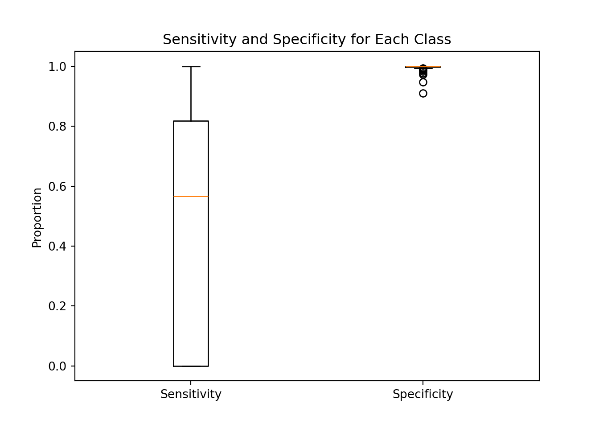
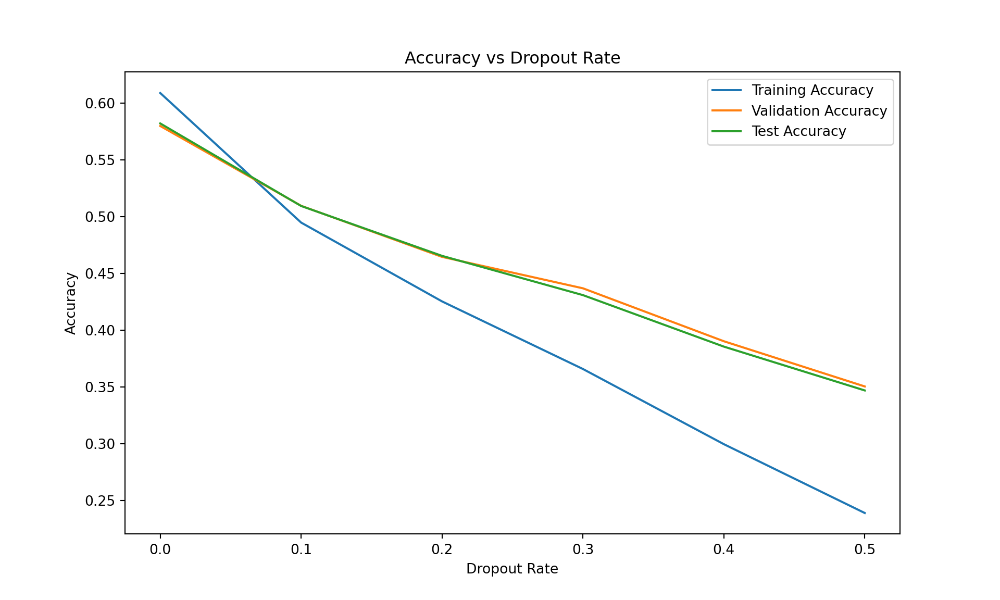
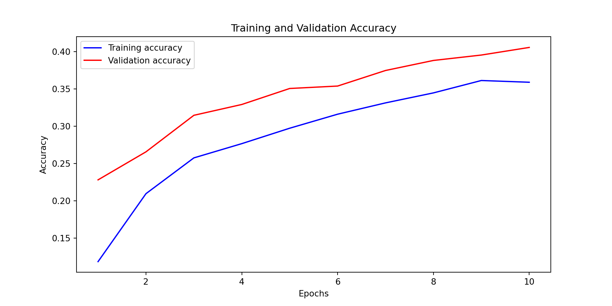
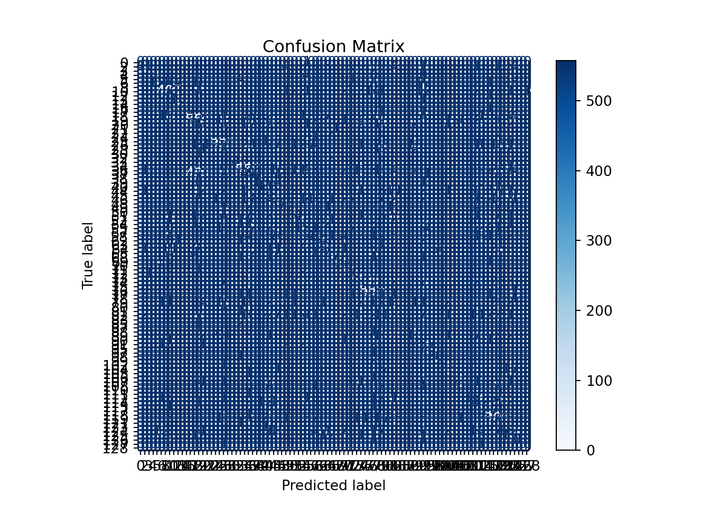

# Define the neural network model
model_no_dropout = Sequential([
Input(shape=(X_train.shape[1],)),
Dense(128, activation='relu'),
Dense(64, activation='relu'),
Dense(y_train.shape[1], activation='softmax')])Neural Network
In this section, we will build a neural network model to predict the make of a car based on the features at our disposal. We will preprocess the data, split it into training and testing sets, define the neural network architecture, compile the model, train it and evaluate its performance.
Preprocessing and splitting the data
The dataset contains different types of data. Some columns are numerical (like “city_mpg_fuel_type_1” or “charge_time_240v”), and some are categorical (“vehicle_class” or “fuel_type”). We identify and separate these two types of columns. Separating numerical and categorical columns is an essential step in data preprocessing because they require different types of handling to prepare them for machine learning algorithms. The numerical columns need to be scaled by adjusting them so they have a mean of zero and a standard deviation of one, which helps the machine learning algorithm perform better. While the categorical columns need to be one-hot encoded which creates a binary column a format that the machine learning model can understand.
The data is split into two parts: training and testing. The training set is used to train the model, and the testing set is used to evaluate its performance. This split ensures that we can test how well the model generalizes to new, unseen data.
Building the neural network models and training them
Base Neural Network
We chose to use a neural network. This neural network consists of layers of neurons, where each layer applies transformations to the data. The first layer takes the input features. Then some Hidden layers help the model learn complex patterns. In the end, the output layer predicts the probability of each car manufacturer. The first layes, the input layer, takes the input features. The second layers is set to 128 neurons, the third to 64 neurons and the last layer, the output layer, has as many neurons as there are car manufacturers. The activation function used in the hidden layers is the Rectified Linear Unit (ReLU), and the output layer uses the Softmax activation function. The model is compiled with the Adam optimizer and the categorical crossentropy loss function.
We used activation functions in the hidden layers to introduce non-linearity into the model. The ReLU activation function is used in the hidden layers because it is computationally efficient and helps the model learn complex patterns in the data. The Softmax activation function is used in the output layer because it converts the model’s raw output into probabilities that sum to one. This allows us to interpret the model’s output as the probability of each car manufacturer.
We used the following hyperparameters:
- epochs: 5 (Corresponds to the number of times the model sees the entire dataset during training.)
- batch_size: 32 (Corresponds to the number of samples that the model processes before updating the weights.)
- validation_split: 0.2 (Corresponds to the fraction of the training data to be used as validation data.)
The model is trained for 5 epochs with a batch size of 32. The validation split is set to 0.2, which means that 20% of the training data is used for validation.
Code
# Generate predictions on the test set
y_pred = model_no_dropout.predict(X_test)
[1m 1/264[0m [37m━━━━━━━━━━━━━━━━━━━━[0m [1m2s[0m 8ms/step
[1m218/264[0m [32m━━━━━━━━━━━━━━━━[0m[37m━━━━[0m [1m0s[0m 231us/step
[1m264/264[0m [32m━━━━━━━━━━━━━━━━━━━━[0m[37m[0m [1m0s[0m 229us/stepCode
y_pred_classes = np.argmax(y_pred, axis=1)
y_true_classes = np.argmax(y_test, axis=1)
# Compute confusion matrix
cm = confusion_matrix(y_true_classes, y_pred_classes)
# Calculate specificity and sensitivity for each class
tp = np.diag(cm)
fp = cm.sum(axis=0) - np.diag(cm)
fn = cm.sum(axis=1) - np.diag(cm)
tn = cm.sum() - (fp + fn + tp)
# Handle potential division by zero
with np.errstate(divide='ignore', invalid='ignore'):
sensitivity = np.divide(tp, tp + fn)
specificity = np.divide(tn, tn + fp)
# Set sensitivities and specificities to 0 where division by zero occurred
sensitivity[np.isnan(sensitivity)] = 0
specificity[np.isnan(specificity)] = 0
# Print specificity and sensitivity for each class
unique_labels = np.unique(y_true_classes)
for i, class_label in enumerate(unique_labels):
print(f"Class {class_label} - Sensitivity: {sensitivity[i]:.4f}, Specificity: {specificity[i]:.4f}")Class 0 - Sensitivity: 0.0000, Specificity: 1.0000
Class 2 - Sensitivity: 0.6164, Specificity: 0.9981
Class 3 - Sensitivity: 0.5500, Specificity: 0.9999
Class 4 - Sensitivity: 0.2500, Specificity: 1.0000
Class 5 - Sensitivity: 0.7941, Specificity: 0.9999
Class 6 - Sensitivity: 0.7500, Specificity: 0.9939
Class 8 - Sensitivity: 0.0000, Specificity: 1.0000
Class 10 - Sensitivity: 0.9093, Specificity: 0.9841
Class 12 - Sensitivity: 1.0000, Specificity: 1.0000
Class 13 - Sensitivity: 0.9062, Specificity: 1.0000
Class 14 - Sensitivity: 1.0000, Specificity: 1.0000
Class 16 - Sensitivity: 0.0000, Specificity: 1.0000
Class 17 - Sensitivity: 0.5000, Specificity: 0.9998
Class 18 - Sensitivity: 0.5660, Specificity: 0.9977
Class 19 - Sensitivity: 0.6036, Specificity: 0.9382
Class 20 - Sensitivity: 0.3427, Specificity: 0.9934
Class 21 - Sensitivity: 0.0000, Specificity: 1.0000
Class 22 - Sensitivity: 0.0000, Specificity: 1.0000
Class 24 - Sensitivity: 0.0833, Specificity: 0.9996
Class 25 - Sensitivity: 0.0000, Specificity: 1.0000
Class 26 - Sensitivity: 0.6909, Specificity: 0.9727
Class 28 - Sensitivity: 0.0250, Specificity: 1.0000
Class 30 - Sensitivity: 0.0000, Specificity: 1.0000
Class 32 - Sensitivity: 0.0000, Specificity: 0.9998
Class 33 - Sensitivity: 1.0000, Specificity: 0.9994
Class 34 - Sensitivity: 0.8000, Specificity: 1.0000
Class 36 - Sensitivity: 0.7798, Specificity: 0.9611
Class 37 - Sensitivity: 0.2831, Specificity: 0.9755
Class 38 - Sensitivity: 0.0000, Specificity: 1.0000
Class 39 - Sensitivity: 0.5217, Specificity: 0.9998
Class 40 - Sensitivity: 0.3667, Specificity: 0.9976
Class 44 - Sensitivity: 0.6725, Specificity: 0.9819
Class 45 - Sensitivity: 0.4000, Specificity: 1.0000
Class 46 - Sensitivity: 0.4031, Specificity: 0.9880
Class 48 - Sensitivity: 0.5000, Specificity: 0.9998
Class 49 - Sensitivity: 0.7576, Specificity: 0.9986
Class 50 - Sensitivity: 0.0000, Specificity: 1.0000
Class 51 - Sensitivity: 0.2093, Specificity: 0.9988
Class 52 - Sensitivity: 0.2857, Specificity: 1.0000
Class 54 - Sensitivity: 0.6311, Specificity: 0.9969
Class 55 - Sensitivity: 0.7240, Specificity: 0.9920
Class 57 - Sensitivity: 1.0000, Specificity: 1.0000
Class 58 - Sensitivity: 0.5028, Specificity: 0.9913
Class 62 - Sensitivity: 0.7857, Specificity: 0.9995
Class 63 - Sensitivity: 0.8551, Specificity: 0.9984
Class 64 - Sensitivity: 0.6718, Specificity: 0.9965
Class 65 - Sensitivity: 0.4026, Specificity: 0.9958
Class 68 - Sensitivity: 0.8182, Specificity: 0.9994
Class 69 - Sensitivity: 0.2500, Specificity: 1.0000
Class 70 - Sensitivity: 0.9574, Specificity: 0.9989
Class 71 - Sensitivity: 0.0000, Specificity: 1.0000
Class 72 - Sensitivity: 0.8810, Specificity: 0.9996
Class 73 - Sensitivity: 1.0000, Specificity: 0.9999
Class 74 - Sensitivity: 0.5484, Specificity: 0.9896
Class 75 - Sensitivity: 0.8000, Specificity: 1.0000
Class 76 - Sensitivity: 0.0000, Specificity: 1.0000
Class 77 - Sensitivity: 0.9286, Specificity: 0.9967
Class 78 - Sensitivity: 0.0000, Specificity: 0.9998
Class 79 - Sensitivity: 0.5116, Specificity: 0.9841
Class 80 - Sensitivity: 1.0000, Specificity: 1.0000
Class 81 - Sensitivity: 0.0000, Specificity: 1.0000
Class 82 - Sensitivity: 0.6946, Specificity: 0.9823
Class 83 - Sensitivity: 0.0000, Specificity: 1.0000
Class 85 - Sensitivity: 0.0000, Specificity: 0.9996
Class 87 - Sensitivity: 1.0000, Specificity: 0.9996
Class 88 - Sensitivity: 0.0000, Specificity: 1.0000
Class 89 - Sensitivity: 1.0000, Specificity: 1.0000
Class 90 - Sensitivity: 0.1845, Specificity: 0.9929
Class 91 - Sensitivity: 0.0000, Specificity: 1.0000
Class 95 - Sensitivity: 0.9556, Specificity: 0.9973
Class 97 - Sensitivity: 0.9130, Specificity: 0.9994
Class 98 - Sensitivity: 0.0000, Specificity: 0.9998
Class 99 - Sensitivity: 1.0000, Specificity: 0.9995
Class 102 - Sensitivity: 1.0000, Specificity: 0.9999
Class 104 - Sensitivity: 1.0000, Specificity: 0.9994
Class 105 - Sensitivity: 0.0000, Specificity: 1.0000
Class 106 - Sensitivity: 0.6901, Specificity: 0.9952
Class 107 - Sensitivity: 1.0000, Specificity: 1.0000
Class 108 - Sensitivity: 0.0000, Specificity: 1.0000
Class 110 - Sensitivity: 0.6250, Specificity: 0.9980
Class 111 - Sensitivity: 0.3636, Specificity: 0.9993
Class 112 - Sensitivity: 1.0000, Specificity: 1.0000
Class 114 - Sensitivity: 0.7500, Specificity: 1.0000
Class 115 - Sensitivity: 0.9206, Specificity: 0.9897
Class 117 - Sensitivity: 0.4900, Specificity: 0.9941
Class 118 - Sensitivity: 0.5000, Specificity: 1.0000
Class 119 - Sensitivity: 1.0000, Specificity: 0.9992
Class 121 - Sensitivity: 0.0000, Specificity: 1.0000
Class 123 - Sensitivity: 0.5602, Specificity: 0.9846
Class 124 - Sensitivity: 1.0000, Specificity: 1.0000
Class 125 - Sensitivity: 0.0000, Specificity: 1.0000
Class 126 - Sensitivity: 0.5649, Specificity: 0.9922
Class 127 - Sensitivity: 0.8976, Specificity: 0.9975
Class 128 - Sensitivity: 0.2500, Specificity: 0.9998Code
# Create boxplots
data = [sensitivity, specificity]
fig, ax = plt.subplots()
ax.boxplot(data, labels=["Sensitivity", "Specificity"]){'whiskers': [<matplotlib.lines.Line2D object at 0x3507026f0>, <matplotlib.lines.Line2D object at 0x3506ad100>, <matplotlib.lines.Line2D object at 0x33b6ec6e0>, <matplotlib.lines.Line2D object at 0x3507033e0>], 'caps': [<matplotlib.lines.Line2D object at 0x3506ad490>, <matplotlib.lines.Line2D object at 0x3506ad790>, <matplotlib.lines.Line2D object at 0x3506accb0>, <matplotlib.lines.Line2D object at 0x3506ad040>], 'boxes': [<matplotlib.lines.Line2D object at 0x33daadcd0>, <matplotlib.lines.Line2D object at 0x3506adfa0>], 'medians': [<matplotlib.lines.Line2D object at 0x3506ada90>, <matplotlib.lines.Line2D object at 0x3506ae2a0>], 'fliers': [<matplotlib.lines.Line2D object at 0x3506add60>, <matplotlib.lines.Line2D object at 0x3506ae570>], 'means': []}Code
ax.set_title("Sensitivity and Specificity for Each Class")
ax.set_ylabel("Proportion")
plt.show()
By looking at the boxplot representing the distribution of the sensitivity and specificity for the classes, we see a clear sign of unbalanced classes. The sensitivity and specificity are not consistent across the classes. This is a sign that the model is not performing well on all classes. We will use class weights to address this issue.
Code
# Create boxplots
data = [sensitivity, specificity]
fig, ax = plt.subplots()
ax.boxplot(data, labels=["Sensitivity", "Specificity"]){'whiskers': [<matplotlib.lines.Line2D object at 0x3768fe150>, <matplotlib.lines.Line2D object at 0x3768feb40>, <matplotlib.lines.Line2D object at 0x3768fff20>, <matplotlib.lines.Line2D object at 0x3768fd1f0>], 'caps': [<matplotlib.lines.Line2D object at 0x3768ff050>, <matplotlib.lines.Line2D object at 0x3768ff320>, <matplotlib.lines.Line2D object at 0x3768fe000>, <matplotlib.lines.Line2D object at 0x3768fd610>], 'boxes': [<matplotlib.lines.Line2D object at 0x3506b26c0>, <matplotlib.lines.Line2D object at 0x3768ffbf0>], 'medians': [<matplotlib.lines.Line2D object at 0x3768ff620>, <matplotlib.lines.Line2D object at 0x3768feae0>], 'fliers': [<matplotlib.lines.Line2D object at 0x3768ff920>, <matplotlib.lines.Line2D object at 0x37696c200>], 'means': []}Code
ax.set_title("Sensitivity and Specificity for Each Class")
ax.set_ylabel("Proportion")
plt.show()As we can see the model performed better with class weights. The sensitivity and specificity are more consistent across the classes. The model is better at generalizing to new data. Let’s now see how the accuracy evolved during the training process with the following plot.
As we can see, at each epoch, the accuracy is increasing and the loss is decreasing. The model is learning from the training data and improving its predictions.
In the end, we have a case of overfitting. The model performs well on the training data but not as well on the testing data. This is an issue because it limits the possibility of generalizing the model to new data.
Final Training Accuracy: 0.6609Final Validation Accuracy: 0.6462Test Accuracy: 0.6250Overall, the performance of the model is still good. However the quality can be improved. To address this issue, we can introduce Dropout layers in the neural network. We will also see if Cross-validation can help to improve the model’s performance later.
Neural Network with Dropout layers
Dropout layers randomly set a fraction of input units to zero during training, which helps prevent overfitting by forcing the model to learn more robust features. We will tune the dropout rate to find the optimal value that balances training and validation accuracy and that insure to reduce overfitting.
# Function to create and compile the model
def create_model(dropout_rate=0.0):
model = Sequential([
Input(shape=(X_train.shape[1],)),
Dense(128, activation='relu'),
Dropout(dropout_rate),
Dense(64, activation='relu'),
Dropout(dropout_rate),
Dense(y_train.shape[1], activation='softmax')
])
model.compile(optimizer=Adam(), loss='categorical_crossentropy', metrics=['accuracy'])
return model
We can see that the model with a dropout rate of 0.2 has the best performance on the test set. This model has a good balance between training and validation accuracy, and it generalizes well to new data. It also eliminate the overfitting issue. We will use this dropout rate to train the final model with droopout layers.
# Out best dropout rate used for the following model.
dropout_rate_to_plot = 0.2
Code
# Helper function to calculate metrics from confusion matrix
def calculate_metrics(cm):
# True Positive, False Positive, False Negative, True Negative
tp = cm[1, 1]
fp = cm[0, 1]
fn = cm[1, 0]
tn = cm[0, 0]
sensitivity = tp / (tp + fn) # True Positive Rate
specificity = tn / (tn + fp) # True Negative Rate
balanced_accuracy = (sensitivity + specificity) / 2
return sensitivity, specificity, balanced_accuracy
# Define the dropout rate to use
dropout_rate = 0.2
# Train the model with the specified dropout rate
print(f"Testing model with dropout rate: {dropout_rate}")Testing model with dropout rate: 0.2Code
model = create_model(dropout_rate=dropout_rate)
# Train the model and collect training accuracy
history = model.fit(X_train_split, y_train_split, epochs=5, batch_size=32, verbose=0, validation_data=(X_val, y_val))
# Evaluate the model on the validation set
val_loss, val_accuracy = model.evaluate(X_val, y_val, verbose=0)
# Evaluate the model on the test set
test_loss, test_accuracy = model.evaluate(X_test, y_test, verbose=0)
# Store the last epoch's training accuracy, validation accuracy, and test accuracy
training_accuracy = history.history['accuracy'][-1]
training_accuracies = [training_accuracy]
validation_accuracies = [val_accuracy]
test_accuracies = [test_accuracy]
# Print rounded accuracy values
print(f"Training accuracy: {round(training_accuracy, 2)}, Validation accuracy: {round(val_accuracy, 2)}, Test accuracy: {round(test_accuracy, 2)}")Training accuracy: 0.56, Validation accuracy: 0.62, Test accuracy: 0.6Code
# Generate the confusion matrix and metrics
y_pred = np.argmax(model.predict(X_test), axis=-1)
[1m 1/264[0m [37m━━━━━━━━━━━━━━━━━━━━[0m [1m5s[0m 19ms/step
[1m214/264[0m [32m━━━━━━━━━━━━━━━━[0m[37m━━━━[0m [1m0s[0m 236us/step
[1m264/264[0m [32m━━━━━━━━━━━━━━━━━━━━[0m[37m[0m [1m0s[0m 233us/stepCode
y_true = np.argmax(y_test, axis=-1)
cm = confusion_matrix(y_true, y_pred)
# Convert confusion matrix to a DataFrame for better readability
cm_df = pd.DataFrame(cm, index=[f'Actual {i}' for i in range(cm.shape[0])],
columns=[f'Predicted {i}' for i in range(cm.shape[1])])
# Print the confusion matrix as a table
print(f'Confusion Matrix for Dropout Rate {dropout_rate}')Confusion Matrix for Dropout Rate 0.2Code
print(cm_df) Predicted 0 Predicted 1 ... Predicted 92 Predicted 93
Actual 0 0 0 ... 0 0
Actual 1 0 41 ... 0 0
Actual 2 0 0 ... 0 0
Actual 3 0 0 ... 0 0
Actual 4 0 0 ... 0 0
... ... ... ... ... ...
Actual 89 0 0 ... 0 0
Actual 90 0 0 ... 0 0
Actual 91 0 0 ... 0 0
Actual 92 0 0 ... 0 0
Actual 93 0 0 ... 0 9
[94 rows x 94 columns]Code
# Calculate and print sensitivity, specificity, and balanced accuracy
sensitivity, specificity, balanced_accuracy = calculate_metrics(cm)<string>:10: RuntimeWarning: invalid value encountered in scalar divideCode
print(f"Sensitivity: {sensitivity:.2f}, Specificity: {specificity:.2f}, Balanced Accuracy: {balanced_accuracy:.2f}")Sensitivity: 1.00, Specificity: nan, Balanced Accuracy: nanCode
# Generate predictions on the test set
y_pred = model.predict(X_test)
[1m 1/264[0m [37m━━━━━━━━━━━━━━━━━━━━[0m [1m1s[0m 7ms/step
[1m227/264[0m [32m━━━━━━━━━━━━━━━━━[0m[37m━━━[0m [1m0s[0m 222us/step
[1m264/264[0m [32m━━━━━━━━━━━━━━━━━━━━[0m[37m[0m [1m0s[0m 221us/stepCode
y_pred_classes = np.argmax(y_pred, axis=1)
y_true_classes = np.argmax(y_test, axis=1)
# Compute confusion matrix
cm = confusion_matrix(y_true_classes, y_pred_classes)
# Display the confusion matrix
disp = ConfusionMatrixDisplay(confusion_matrix=cm, display_labels=np.unique(y_true_classes))
disp.plot(cmap=plt.cm.Blues)<sklearn.metrics._plot.confusion_matrix.ConfusionMatrixDisplay object at 0x37730fb60>Code
plt.title('Confusion Matrix')
plt.show()
Code
# Calculate specificity and sensitivity for each class
tp = np.diag(cm)
fp = cm.sum(axis=0) - np.diag(cm)
fn = cm.sum(axis=1) - np.diag(cm)
tn = cm.sum() - (fp + fn + tp)
sensitivity = tp / (tp + fn)
specificity = tn / (tn + fp)
# Print specificity and sensitivity for each class
unique_labels = np.unique(y_true_classes)
for i, class_label in enumerate(unique_labels):
print(f"Class {class_label} - Sensitivity: {sensitivity[i]:.4f}, Specificity: {specificity[i]:.4f}")Class 0 - Sensitivity: 0.0000, Specificity: 1.0000
Class 2 - Sensitivity: 0.5616, Specificity: 0.9987
Class 3 - Sensitivity: 0.1500, Specificity: 0.9999
Class 4 - Sensitivity: 0.0000, Specificity: 1.0000
Class 5 - Sensitivity: 0.7647, Specificity: 0.9996
Class 6 - Sensitivity: 0.5381, Specificity: 0.9965
Class 8 - Sensitivity: 0.0000, Specificity: 1.0000
Class 10 - Sensitivity: 0.8960, Specificity: 0.9761
Class 12 - Sensitivity: 0.0000, Specificity: 1.0000
Class 13 - Sensitivity: 0.5625, Specificity: 0.9994
Class 14 - Sensitivity: 1.0000, Specificity: 1.0000
Class 16 - Sensitivity: 0.0000, Specificity: 1.0000
Class 17 - Sensitivity: 0.0000, Specificity: 1.0000
Class 18 - Sensitivity: 0.4528, Specificity: 0.9981
Class 19 - Sensitivity: 0.6663, Specificity: 0.9274
Class 20 - Sensitivity: 0.3357, Specificity: 0.9921
Class 21 - Sensitivity: 0.0000, Specificity: 1.0000
Class 22 - Sensitivity: 0.0000, Specificity: 1.0000
Class 24 - Sensitivity: 0.0000, Specificity: 0.9999
Class 25 - Sensitivity: 0.0000, Specificity: 1.0000
Class 26 - Sensitivity: 0.6555, Specificity: 0.9743
Class 28 - Sensitivity: 0.0000, Specificity: 1.0000
Class 30 - Sensitivity: 0.0000, Specificity: 1.0000
Class 32 - Sensitivity: 0.0000, Specificity: 1.0000
Class 33 - Sensitivity: 1.0000, Specificity: 0.9983
Class 34 - Sensitivity: 0.7000, Specificity: 1.0000
Class 36 - Sensitivity: 0.7812, Specificity: 0.9484
Class 37 - Sensitivity: 0.0819, Specificity: 0.9912
Class 38 - Sensitivity: 0.0000, Specificity: 1.0000
Class 39 - Sensitivity: 0.6522, Specificity: 0.9996
Class 40 - Sensitivity: 0.5333, Specificity: 0.9964
Class 44 - Sensitivity: 0.4279, Specificity: 0.9932
Class 45 - Sensitivity: 0.0000, Specificity: 1.0000
Class 46 - Sensitivity: 0.4817, Specificity: 0.9789
Class 48 - Sensitivity: 0.0000, Specificity: 1.0000
Class 49 - Sensitivity: 0.7273, Specificity: 0.9981
Class 50 - Sensitivity: 0.0000, Specificity: 1.0000
Class 51 - Sensitivity: 0.3953, Specificity: 0.9956
Class 52 - Sensitivity: 0.2857, Specificity: 1.0000
Class 54 - Sensitivity: 0.4754, Specificity: 0.9971
Class 55 - Sensitivity: 0.7865, Specificity: 0.9890
Class 57 - Sensitivity: 0.0000, Specificity: 1.0000
Class 58 - Sensitivity: 0.2570, Specificity: 0.9955
Class 62 - Sensitivity: 0.8571, Specificity: 0.9989
Class 63 - Sensitivity: 0.7971, Specificity: 0.9983
Class 64 - Sensitivity: 0.4427, Specificity: 0.9976
Class 65 - Sensitivity: 0.2987, Specificity: 0.9978
Class 68 - Sensitivity: 0.6364, Specificity: 0.9995
Class 69 - Sensitivity: 0.0000, Specificity: 1.0000
Class 70 - Sensitivity: 0.9149, Specificity: 0.9960
Class 71 - Sensitivity: 0.0000, Specificity: 1.0000
Class 72 - Sensitivity: 0.7143, Specificity: 0.9983
Class 73 - Sensitivity: 0.5000, Specificity: 1.0000
Class 74 - Sensitivity: 0.4147, Specificity: 0.9909
Class 75 - Sensitivity: 0.5333, Specificity: 1.0000
Class 76 - Sensitivity: 0.0000, Specificity: 1.0000
Class 77 - Sensitivity: 0.9343, Specificity: 0.9900
Class 78 - Sensitivity: 0.0000, Specificity: 1.0000
Class 79 - Sensitivity: 0.5721, Specificity: 0.9796
Class 80 - Sensitivity: 0.0000, Specificity: 1.0000
Class 81 - Sensitivity: 0.0000, Specificity: 1.0000
Class 82 - Sensitivity: 0.4631, Specificity: 0.9871
Class 83 - Sensitivity: 0.0000, Specificity: 1.0000
Class 85 - Sensitivity: 0.0000, Specificity: 1.0000
Class 87 - Sensitivity: 0.0000, Specificity: 1.0000
Class 88 - Sensitivity: 0.0000, Specificity: 1.0000
Class 89 - Sensitivity: 0.0971, Specificity: 0.9972
Class 90 - Sensitivity: 0.0000, Specificity: 1.0000
Class 91 - Sensitivity: 0.9519, Specificity: 0.9897
Class 95 - Sensitivity: 1.0000, Specificity: 0.9994
Class 97 - Sensitivity: 0.0000, Specificity: 1.0000
Class 98 - Sensitivity: 0.9744, Specificity: 0.9990
Class 99 - Sensitivity: 0.4737, Specificity: 0.9995
Class 102 - Sensitivity: 0.0000, Specificity: 1.0000
Class 104 - Sensitivity: 0.4930, Specificity: 0.9971
Class 105 - Sensitivity: 0.0000, Specificity: 1.0000
Class 106 - Sensitivity: 0.0000, Specificity: 1.0000
Class 107 - Sensitivity: 0.4792, Specificity: 0.9987
Class 108 - Sensitivity: 0.0000, Specificity: 1.0000
Class 110 - Sensitivity: 0.0000, Specificity: 1.0000
Class 111 - Sensitivity: 0.0000, Specificity: 1.0000
Class 112 - Sensitivity: 0.8624, Specificity: 0.9910
Class 114 - Sensitivity: 0.4200, Specificity: 0.9922
Class 115 - Sensitivity: 0.0000, Specificity: 1.0000
Class 117 - Sensitivity: 1.0000, Specificity: 0.9975
Class 118 - Sensitivity: 0.0000, Specificity: 1.0000
Class 119 - Sensitivity: 0.6390, Specificity: 0.9564
Class 121 - Sensitivity: 0.0000, Specificity: 1.0000
Class 123 - Sensitivity: 0.0000, Specificity: 1.0000
Class 124 - Sensitivity: 0.6221, Specificity: 0.9873
Class 125 - Sensitivity: 0.7831, Specificity: 0.9967
Class 126 - Sensitivity: 0.2500, Specificity: 1.0000
Class 127 - Sensitivity: 0.0000, Specificity: 1.0000
Class 128 - Sensitivity: 1.0000, Specificity: 0.9999The model is trained using the training data. During training, the model learns by adjusting its internal parameters to minimize the difference between its predictions and the actual car manufacturers in the training data. The model is trained for a fixed number of iterations called epochs.